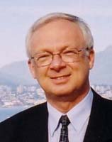
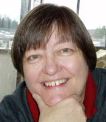

|
CLICK
|
 |
to close this page.
|
|  |
A TRIBUTE TO MY DAD (Delivered at the Memorial Service, February 14, 2005) By Gerhart Pahl |
First of all, on behalf of our family, I would like to thank each of you for coming and participating in this day that is so meaningful to us. In so doing, you show your respect to my dad and support to our family. A special thanks to those who traveled some distance to be here.
I would like to take a few moments to share with you a thought or two of who Fred Pahl was to me. In actual fact, if I were to really do justice to this topic, I would be here for some time, as you might well imagine.
Many of you met and knew dad as a pastor - or minister - or preacher - or clergyman - or reverend - whichever word you prefer to use. Of those words I used, I like the term “pastor” best. Of course he preached, baptized believers, studied and taught Holy Scripture, prayed, conducted ceremonies, and did all those things that pastors do. In actual fact, he may not have been the most intellectual theologian or eloquent orator, but I will remember him best as a GREAT pastor, more like a "shepherd" who led, nurtured, and cared for the congregations that God entrusted into his care throughout his life. It was a great responsibility that he was given, and he, "with God’s help” (I think he would interject), carried it out faithfully and well.
His sometimes simple, straight-forward, sincere and personal style and approach for dealing with both day-to-day and complex situations were effective and appreciated. He was sensitive to the personal needs and feelings of people, rather than merely achieving a goal or objective. As a result, the job got done, interpersonal relationships were strengthened, and harmony prevailed. He met with people whether they lived just down the street or miles away, in his office, our home, their home or hospital. He met people during the day, in the evening, or on weekends – whenever he was needed. As I observe some of our current ministers and their business-like approach to their ministries, I can’t help but think how special my father was in filling his pastoral role and his calling.
What do I remember most about my dad’s ministry which was so much a part of our family life? Not any specific sermon, although I might recall a few if I tried hard; not his leading the little Springside church orchestra - which he didn’t do especially well because he was not musical; and not the number of people who became church members. It was his genuine love for the Lord and a compulsion to follow His leading and to be in the center of His will. You might think this would be easy and natural for a pastor, but I suspect he had to work at it and refresh himself daily, even as you and I must. He taught me these things. From being around Fred Pahl I learned to love the Lord and serve Him in ways that went beyond just being a “good guy” but in ways that others might see Christ in my life as was the case in dad’s life.
I don’t know how to measure success in this regard - only God knows - but my dad gave me a great example and a high standard to aim for. Dad’s love and dedication for the Lord has inspired me and given me an example and foundation for a life built on “the solid rock.”
Something that always amazed me about my dad was the many practical skills that he possessed. I wish that somehow he could have passed these along to me, but, alas, either it was not in the genes or I was not a good student, or simply that I was just not capable of excelling in this regard. Specifically, I have always admired his ability to build things – I mean really build things – like houses. (You have to understand that I’m the guy who measures a board five times before cutting it - only to discover that after the cut, it is too short!!!) Dad had no formal training in this area, but he just knew how to do it – when to use double or triple 2x4s or when something should be 8” and not 10” wide. It was uncanny. I have no doubt that he could have become very successful and wealthy as a contractor or developer had this been his vocation. Instead, he accepted the calling of a pastor and felt that for himself this was the highest calling.
I will always remember a specific conversation I had with him which revealed his perspective about vocation, goals, and material rewards which, to most of us, seem so important in life. One day we were talking about an acquaintance who had attained great success and wealth in construction. This person had built a company and was clearly enjoying the rewards of his effort. Here was my dad, who had heeded God’s call to be a pastor and to feed God’s sheep. I asked dad what he thought of this and how he felt when comparing the success and wealth of this person, his peer, with his own work history. After all, my dad was human. He looked at me and, with a smile, simply replied, “Big deal, I could have done that.” And indeed he could have. Make no mistake, my dad lived a full, meaningful, and rewarding life.
My dad never felt inferior or envious of those who enjoyed other successes and wealth. I’m positive that in his thinking, he was the fortunate one. He knew, and conveyed to me, that the most important thing in life was to serve the Lord, no matter where that would lead or the circumstances. This alone would result in lasting peace and fulfillment. What a person did in serving the Lord, regardless of vocation, how they treated others, their personal character and integrity - these were the real measures of a life well lived. Other things were certainly attainable and legitimate pursuits but they were not the “main event.”
But most important to me was that Fred Pahl was my dad – my father. I say “father” with emphasis since I sometimes hear parents or prospective parents say that they strive to be their children’s “best friend.” I don’t mean to be critical of those who use this term, but I say that dad was not my best friend. He was not really my buddy. Although “friendship” certainly existed, first and foremost he was my father. If the truth be known, we had different interests, tastes, and pastimes. (He never really got into SCUBA diving or bee-keeping.) Even when we golfed together a few times in the 1960’s, dad’s idea of a good day was finding lots of balls, while mine was trying to get a better score.
When I floundered or was confused, I knew that he was not with me as my friend. He was above me - not my peer. He was there for me to look up to, someone outside of my problem who could reach down, give me a hand and pull me up. We did not just float down the stream of life together as buddies. He had wisdom and experience which supported me. Dad knew the way out. He would have a plan. Dad was there as a lamp in the night, a guide, an example even into my adult life when I did not need to rely as much on his help and guidance. And he enjoyed my successes and achievements with the pride of a father, not as a buddy. I think that in life it is easy to latch onto friends and good buddies, but what dad offered me was very special, even though I didn’t always take full advantage of his wisdom. Maybe that’s just what fathers and families do, but this does not make it any less special and memorable to me on a day like today.
Most of us in this room have known and remember my dad’s friendly, personable nature, and good humour. But make no mistake, dad took life very seriously. Life was not frivolous - it was serious stuff. There were responsibilities to God and others. Living the godly life was of paramount importance. Character and integrity were always more important than frivolity and pleasure.
Dad took fatherhood very seriously - as kids, we might have thought maybe too seriously at times. You all know the saying when a parent disciplines his child – “This hurts me more than it hurts you.” Well, my dad said this, and I suspect that this was true for him. (Of course, we thought that if he had foregone some of this pain for himself, it would have been quite OK with us.) I remember that dad was always fair, and he never acted in anger toward us. Dad took parenthood very seriously, ever striving to be the teacher, leader, provider, and example to us, his children.
Despite what TV and movies sometimes portray, there is no perfect earthly parent - and I'm not trying to say that dad was the exception. But I am so grateful to God for giving me Fred Pahl as my father. I do not know how God goes about assigning children to specific parents on earth, but I consider myself to be one of the most privileged and blessed to have been placed in the Fred Pahl home.
Dad was good to me; he loved me, and he was concerned for me by almost any measure that you could name. He did every human good thing he could – always mindful of my best interests even when I may have thought otherwise. (He and mom even thought that taking piano lessons was in my best interest. Oh well, he was not perfect, he was not right all the time!) Beyond what he could physically do himself, I know that he constantly invoked God in prayer, to provide, lead, and guide me in my journey through life. I ask you, what more could one ask for? (Well, he could have given me a correctly spelled first name - that’s just a family joke.)
For "better or worse," his influence and mark is stamped upon me. Oops, that is a mistake – I think that the “for worse” part of me has very little to do with dad’s influence - that part reflects my own doing. Let me restate this thought – “for better,” dad’s influence and mark is stamped upon me.
So, we are here today in memorial to my dad. We all have our version of Fred Pahl, and each of us will remember specific things or incidents for a long time, whether this be simply that Fred Pahl was a man of God, a man of character and integrity, a caring pastor, a likable and cheery fellow, a comforter in time of need, builder of houses, or maybe even that he was a terrible singer.
But, at the end of the day, or should I say “at the end of Fred Pahl’s day,” I am so proud to stand here before you, on this day, as one of two persons who are so very grateful, thankful, and blessed to have known Fred Pahl as “dad.”
Now your soul is laid to rest, and we'll bow our heads and pray.
For the Lord has called your spirit to His heavenly home.
Though it seems you're by yourself - you didn't go alone.
Part of us went with you, and part of you remains.
You live inside of all of us, we'll never be the same.
You see, you touched our lives and opened our eyes to see
That the Lord holds you in His arms, and you finally are free.
So these tears we shed are sweet ones, and the memories will make us smile.
This feeling that we have won't stay for long, it will only stay awhile.
For we know you are at peace as your body is laid to rest,
Because we know in our hearts that God only takes the best.
(Selected)
|
A TRIBUTE TO MY DAD (Delivered at the Memorial Service, February 14, 2005) By Susan Pahl |  |
We’re here today to celebrate the life of a good man - a man I have been privileged to call “Dad” for more than 50 years. Since his death, various memories of him have been running through my head, and these memories help sum up the kind of man he was. I’d like to share a few of them with you.
Perhaps one of my first memories of him goes way back to Olds, Alberta. I was probably about 4 years old, and I wanted to learn how to ride our bike. Of course, the bike was way too big and heavy for me, but Dad was patient enough to be my “training wheels” and he pushed and stabilized me as I rode around the church. On one of our runs around the church, Dad felt I had the hang of it and let go of the bike. I remember the mixed feelings of fright and exhilaration I had when I realized that Dad was no longer holding me up and that I was cycling on my own! Unfortunately, I didn’t have enough skill or strength to turn the handlebars, so when I got to the curve at the back of the church, I left the road and went down the slope to the cemetery. Although my memory of the event is a little bit fuzzy, somehow the bike stopped at the bottom of the slope, and I waited for Dad to come and push the bike up the slope so I could get back on and ride another time around the church - and down the slope. Of course, he was there and kept on patiently helping me until I could get the hang of turning the handlebars at the right time and staying on the road.
Another memory I have was when I was about sixteen. I hadn’t had my driver’s license for very long, and one night I was out with some kids from church and somehow managed to come home with a dent in the rear fender. With a fair amount of trepidation, I entered my parents’ room to inform them about the sad state of the car. Dad came out to the garage with me, looked at the small dent (yes, it was small!) and put his arm around my shoulder, saying, “Don’t worry. Why do you think we kept this old clunker!” I can’t begin to explain the relief I felt, but also the joy in knowing that Dad was, yet again, there for me when I needed him to be.
Most of all, my memories of Dad are that he was a man of integrity, kindness, humor, and love. When Dad gave his word, he meant it. He meant it when he committed his life to God as a young man and never wavered in his promise to live for and serve his Lord.
He meant it when he vowed to love, honor, and cherish mom in sickness and in health. For 58 years he put her first, cheerfully caring for her. His joy was in taking care of her, doing the little things - bringing a glass of water, making breakfast, and just being there for her.
He meant it when, 54 years ago, he committed himself to being my father. Never once did he waver in his unconditional love to me, even though I know there were times when I sorely tried his patience and disappointed him. But he was always there, with his strong arms to steady the bike, to give a hug, to encourage, and sometimes, to set me straight. I always knew I could depend on him.
He was kind and caring. I’ll miss coming home from work late in the evening and having him exclaim, “Well, you’re home; now I can go to bed.” I’ll miss having him around, and I’ll miss his gentle good humor and smile. But I’m so happy to know he is with his Lord and Savior, and that he is probably singing on key for the first time as he joins the heavenly chorus. What a joy and privilege it was to know him and be loved by him, and what a comfort it is to know that we will meet again.
In every single thing I do you still play a part.
When I have to make decisions and I don't know what to do,
Once again - my mind, I find - will go right back to you.
I think of how you'd handle it, and try to work it out,
It's at times like this I really miss having you about.
Not only for this reason when things are going bad,
There's a million different reasons why I miss my dear Dad.
(Selected)
|
CLICK
|
|
to close this page.
|